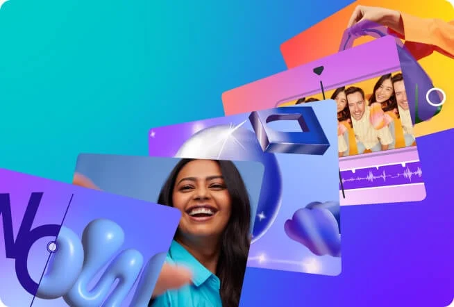
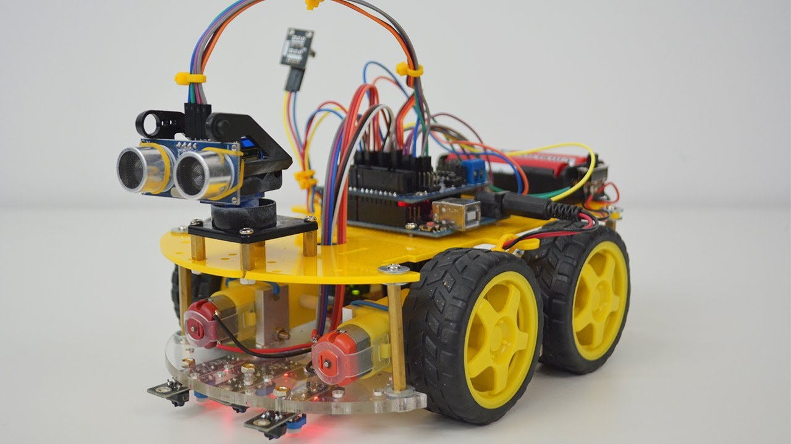
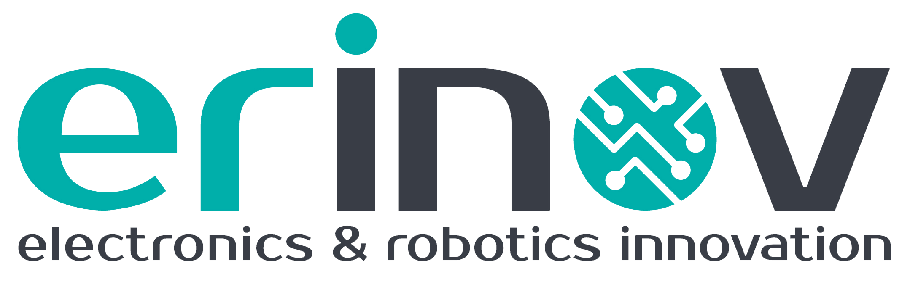
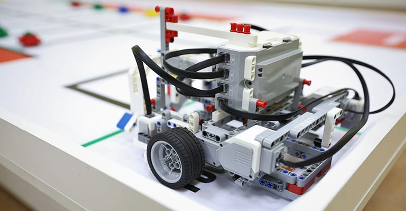

Sur moi
Je suis Ryad Fartas, étudiant en deuxième année de licence informatique à l’Université d’Oran 1. Passionné par la technologie, l’intelligence artificielle, et la robotique éducative, j’ai participé à plusieurs projets liés à la programmation de robots (Arduino, EV3) ainsi qu’au développement web Mon objectif est de combiner mes compétences techniques avec ma créativité pour résoudre des problèmes concrets et contribuer à des projets innovants. J’ai également une expérience dans l'encadrement de jeunes en tant que formateur en programmation, et j’ai été bénévole lors d’événements internationaux comme les Jeux Méditerranéens. Motivé, curieux et toujours prêt à apprendre, je suis à la recherche d'opportunités pour enrichir mon parcours, notamment dans des projets liés au développement web, à l’IA ou à l’expérience utilisateur.
Compétences

Design
J’utilise Adobe Photoshop pour la retouche photo, la création de maquettes graphiques, et la manipulation d’images avancée. Cette compétence me permet de produire des visuels de haute qualité, que ce soit pour des projets web, des publications ou des supports imprimés. Je sais aussi travailler avec les calques, les filtres, et les outils de sélection pour un rendu professionnel.

Robotique
Je maîtrise la programmation de microcontrôleurs Arduino Nano, utilisée dans des projets de robotique éducative, de domotique ou de capteurs intelligents J’ai réalisé des montages électroniques, programmé en C/C++ avec l’IDE Arduino, et utilisé des capteurs (ultrasons, température, lumière) pour concevoir des systèmes interactifs. .

Dev Weeb
Je possède une bonne maîtrise de HTML5 et CSS3, ce qui me permet de créer des sites web modernes, responsives et bien structurés. Je sais organiser le contenu avec des balises sémantiques, styliser avec des grilles, Flexbox, animations CSS, et assurer la compatibilité multi-écrans. Ces bases me servent également à intégrer des maquettes ou des designs personnalisés.
Expériences

Formateur en robotique – Erinove
on tant que formateur à l'école de robotique Erinove, j'ai animé des ateliers pour enfants et adolescents autour de la programmation de robots (Arduino Nano, LEGO EV3), de l’initiation à l’électronique, et de la pensée algorithmique J’ai conçu des supports pédagogiques, encadré des projets pratiques et accompagné les apprenants dans la résolution de problèmes techniques, tout en stimulant leur curiosité et créativité.

Participation à des compétitions de robotique
J’ai participé à des concours régionaux de robotique éducative, en développant des solutions techniques à base d’Arduino et de capteurs intelligents. J’ai travaillé en équipe pour résoudre des défis en temps limité, en combinant programmation, électronique, et résolution de problèmes.
Création d’un chatbot IA
Conception d’un chatbot avec traitement du langage naturel.
Mes projets

Calculatrice Web en HTML/CSS
Il s'agit d’un projet de calculatrice web statique, conçu uniquement avec HTML pour la structure et CSS pour le design. Bien que non fonctionnelle (aucune logique de calcul sans JavaScript), cette calculatrice simule visuellement une vraie interface utilisateur.

Design d’un jeu Snake (HTML/CSS uniquement)
Ce projet présente l’interface graphique d’un jeu Snake, conçue uniquement avec HTML et CSS, sans logique fonctionnelle JavaScript.

Box Model en CSS
Le Box Model est un concept fondamental en CSS qui décrit comment chaque élément HTML est représenté à l’écran sous forme d’une boîte rectangulaire.
Contact
ryadfartas.rf@gmail.com
0792325254